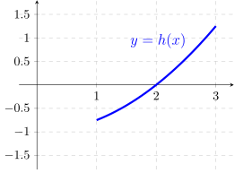

\[ h(x)=\frac {x^2-4}{4},\ 1 <x < 3 \]
\[ g(x)=x-2,\ 1 < x < 3 \]
The graph of the function \(h\) is given in the figure
below. Let \(f\) be a function defined on the interval \((1,3)\) that satisfies the following
inequalities \[ g(x) \le f(x) \le h(x),\ 1 < x < 3 \]
- (a)
- In the figure below, sketch and label the graph of \(g\) and a possible graph
of \(f\). (All three functions have a common domain \((1,3)\).)

- (b)
- Evaluate the limit, or state that it does not exist. Justify your answer.
- (i)
- \(\displaystyle \lim _{x \to 2} f(x)\)
- (ii)
- \(\displaystyle \lim _{x \to 2} \frac {f(x)+2}{x-1}\)
- (iii)
- \(\displaystyle \lim _{x \to 2} g(1+e^{f(x)})\)